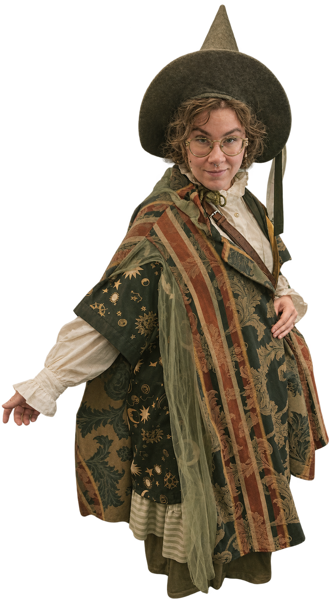
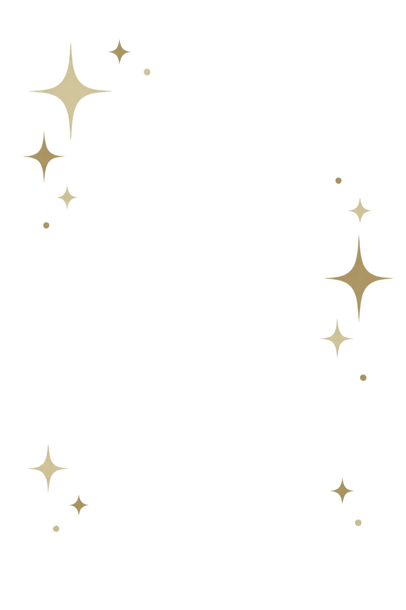

Om mig


Var hälsad!
Jag heter Kei och studerar webbutveckling på Mittuniversitetet. Jag bor i Floby och tycker om att skapa, både digitalt och med händerna. På fritiden tecknar jag gärna, pysslar och försvinner in i en bra bok eller ett spel.
Skog, sagor och lite vardagsmagi är återkommande inspirationskällor för mig. Det syns även här på webbplatsen, där jag har valt murriga naturtoner, grönska och en och annan svamp. 🍄